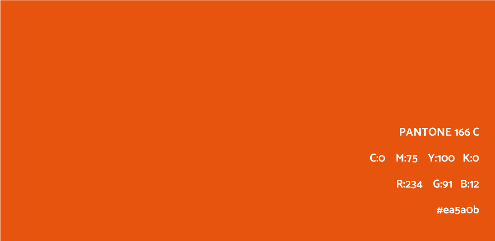
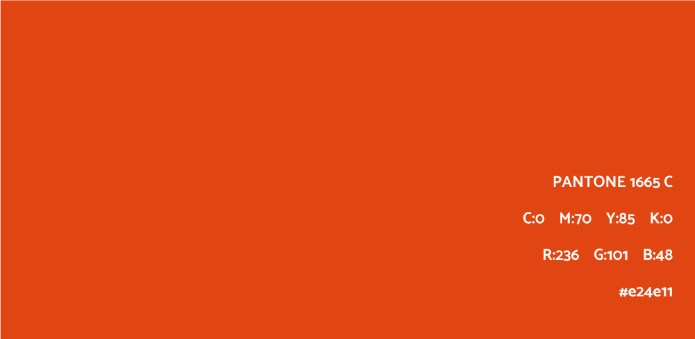
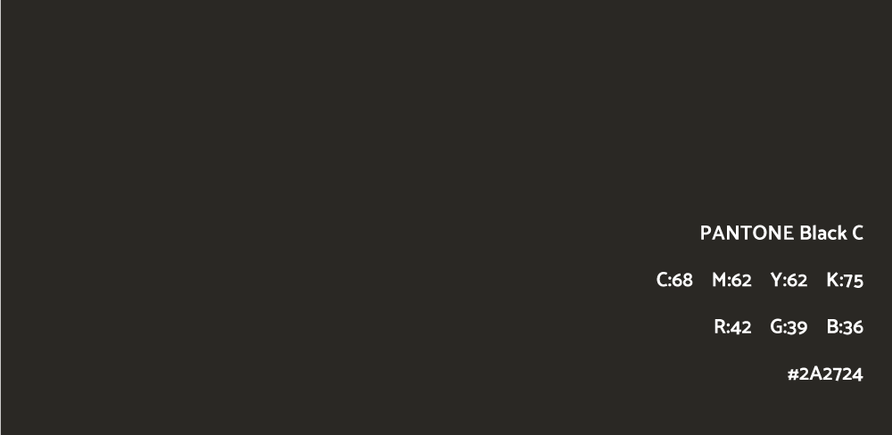
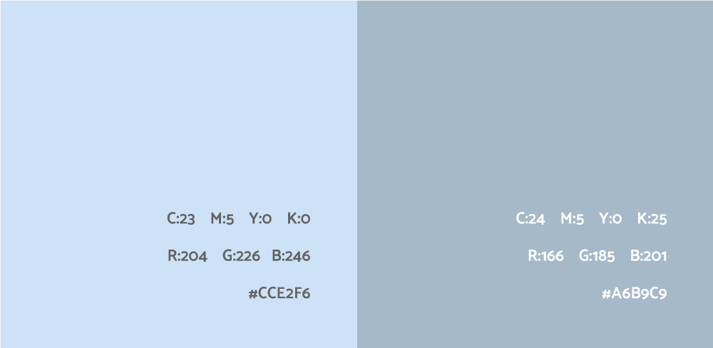
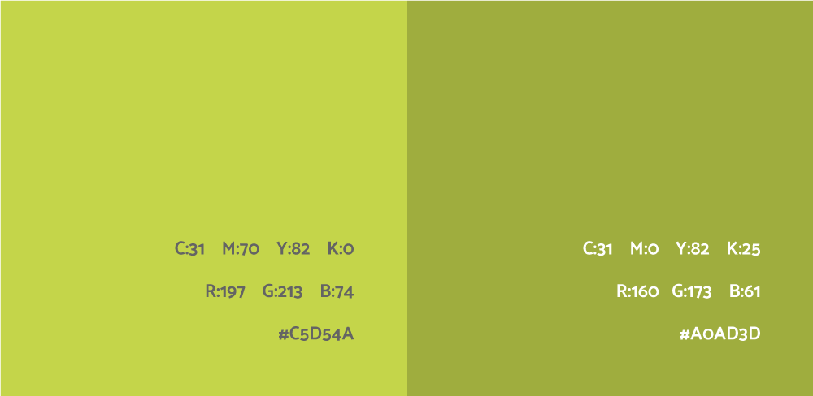
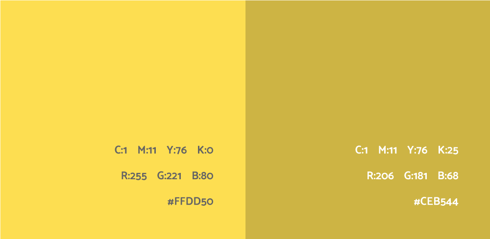
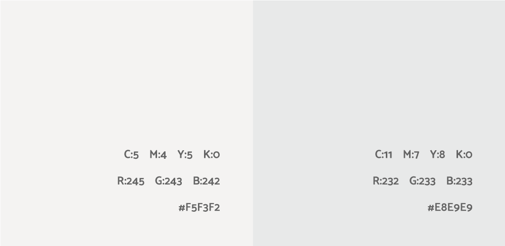

Kom meer te weten over de verschillende kleuren en hoe ze gebruikt moeten worden.
Kleur is een belangrijk onderdeel van een huisstijl. De kleur die gebruikt is in deze huisstijl is een kleur die opgelegd is door Stad Gent.
Het secundaire kleur is een kleur dat we in combinatie gebruiken met het primaire kleur. Het zorg voor een contrast bij het logo. Als men het logo wilt gebruiken op een primair-gekleurde achtergrond dan worden de oranje tinten in het logo aangepast naar de secundaire oranje kleur.
 De tertaire kleuren zijn de kleuren die elders in de huisstijl te vinden zijn. Ze worden gebruikt bij verschillende onderdelen.
   